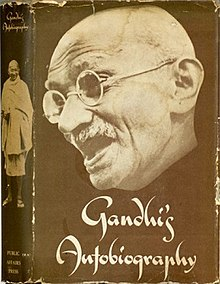

I belive Book reading and discussion topics with friends in library at UW-Madison, WI. Reading exercises the brain, improves literacy, a form of (free) entertainment, improves concentration and the ability to focus, increases general knowledge, motivational and reduces stress and improves sleep quality.
My Experiment With Turth
by M.K. Gandhi

This is one of my favorite books because it discusses Gandhi's battles as the leader of several civil disobedience campaigns. He wanted them to be peaceful, but fighting broke out several times. In 1922, he was sentenced to six years in prison after colonial authorities charged him with incitement, specifically inciting hatred against the government. He was released early after only two years due to poor health. Gandhi began writing his autobiography in the winter of 1925, at the age of 56, and completed it in February 1929.
Wings of Fire
by A.P.J. Abdul Kalam

Dr. A. P. J. Abdul Kalam, India's Missile Man and President, wrote his autobiography, Wings of Fire. It was co-written by him and Arun Tiwari. In his autobiography, Kalam examines his early life, effort, hardship, fortitude, luck, and chance, which eventually led him to lead India's space research, nuclear, and missile programs.